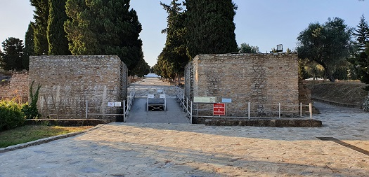

|
MURALLAS
La ciudad
estaba amurallada, pero actualmente son muy escasos los restos visibles. Existe
un plano topográfico general de Itálica del Padre Cevallos de 1861, gracias al
cual Demetrio de los Ríos hace una descripción que permitía delimitar el
perímetro de la muralla y la ciudad.
|
 |
Se han hallado
restos de una muralla de finales del siglo IV cuando la ciudad se encogió y se
redujo considerablemente, quedando muchas casa del nuevo barrio fuera de ella. Cerca del
anfiteatro en el lado norte por donde se accede al conjunto monumental, se
aprecia restos de la cimentación de la muralla y una puerta por la que se accede
a la ciudad. La puerta está flanqueada por dos torres paralelepípedicas. La
excavación permite ver la sección de las cimientos de las torres y una
cloaca que discurre bajo la calle. El grosor de la muralla es de 1,5m de
anchura.
Sobre el basamento
de hormigón se levantaba el muro de sillares que a intervalos de 20m exhibía una
torre cuadrada de unos 5m de anchura. La muralla del nuevo barrio tendría una
función mas simbólica que defensiva.
|
El recorrido del
recinto amurallado de la zona norte y oeste se conoce bastante bien, una hilera
de cipreses marca por donde discurría la muralla por el este hacia el teatro y
por el oeste hacia los depósitos de agua.
|